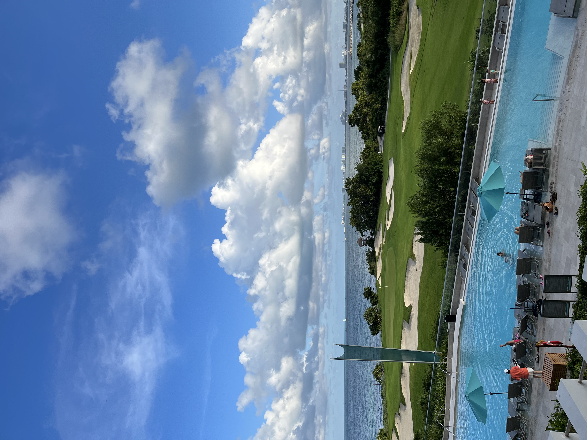
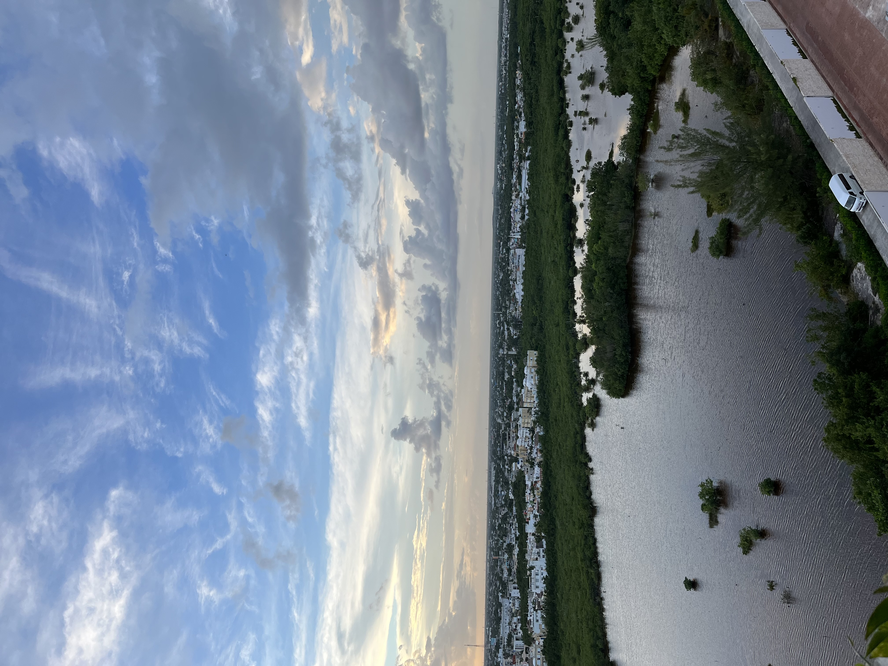

Home
Sitemap
About the author
Contact
Home
Sitemap
About the author
Contact
| Location Name | Location Highlight |
|---|---|
| Cancun | The beautiful views! |
| Chichén Itzá | The historical significance and the history behind the land! |
| Valladolid | The cenote which shows a beautiful swimming cave that was naturally developed! |
Cancun, Mexico is a popular tourist destination and vacation spot for everyone. There are a lot of great resorts and hotels to stay at. I stayed in Dreams Vista Cancun Resort & Spa for a week. It was an all inclusive spot that had great amenities ranging from all you can eat restaurant spots, swimming pools, and game rooms. The area itself was amazing and beautiful. Check out some pictures from around the resort!
 Chichén Itzá is one of the locations of the Mayan ruins in Mexico's Yucatán Peninsula. They have multiple pyramids that are currently available for tourist viewing. The biggest pyramid in Chichén Itzá is El Castillo which dominates the ancient city. There is even a ball court that visitors can go into to view the ancient carvings. However, tourist are no longer allowed inside the pyramids due to a history of graffiti vandalism.


Valladolid is a city located in the eastern part of the Mexican state of Yucatán. There are a variety of tourist activities to enjoy, however, my favorite is the cenotes! Cenote Zaci is one of the cenotes that is located in the center of the beautiful city Valladolid in Mexico. It's one of the best cenotes in the area, and swimming in its crystal clear waters is one of the top activities to do in Valladolid. Essentially they are swimming holes that are naturally made.